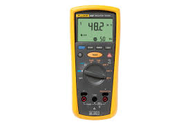
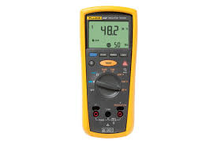

FLUKE Tester
Alat untuk menguji kualitas kabel jaringan, mendeteksi error, dan memastikan performa jaringan.
📥 Lihat Materi Klik link di samping nama alat untuk membuka materi lengkap di Google Drive.
Alat untuk menguji kualitas kabel jaringan, mendeteksi error, dan memastikan performa jaringan.
📥 Lihat Materi Digunakan untuk memeriksa sambungan kabel UTP/STP agar sesuai standar straight-through atau crossover.
📥 Lihat Materi
Digunakan untuk mengukur daya optik pada kabel fiber optik.
📥 Lihat Materi
Optical Time Domain Reflectometer untuk mengukur panjang kabel fiber dan mendeteksi kerusakan pada serat optik.
📥 Lihat Materi
Alat untuk mengukur tegangan, arus, dan resistansi, baik analog maupun digital.
📥 Lihat Materi
Digunakan untuk menampilkan bentuk gelombang sinyal listrik, sehingga bisa mempelajari frekuensi dan tegangan secara detail.
📥 Lihat Materi